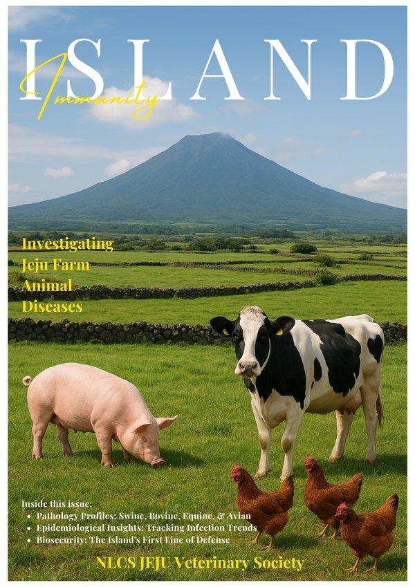

Run by students who want to know what a vet knows. Here you work through real clinical cases, learn the hands-on skills on models, study how animals behave and how they learn, and write up what you find. Any year group. No experience needed.
Chair Henry Yuan · site made by Dr Daniel Mompel Riera, Biology, NLCS Jeju
Here you take a real case, a lame horse, a coughing calf, a dog that will not eat, and work it the way a vet would: history, examination, tests, a diagnosis, a plan.
Here you learn to close a wound on a practice pad: which stitch, which knot, how tight, and why it matters which you choose.
Here you find the vein and draw blood from a silicone mould with a tube running through it, then learn what a blood test can tell you and what it cannot.
Here you read an animal: what a flattened ear, a swishing tail or a lowered head is telling you, and what it means for handling it safely.
Here you learn how a dog learns: the marker, the reward, the timing, and why punishment teaches the wrong thing.
Here you turn what you found into pages other people can use. Issue 1 of the magazine is below; issue 2 is yours to write.
Dr Mompel knows several vets. If enough of you want it, one could come to a meeting, or have you shadow a clinic for a day. Their time is precious, so the interest has to be real, and you arrive with your questions written down.
Roe deer, the island’s birds, the bats in the lava tubes, what the sea washes up: who looks after Jeju’s wild animals when they are hurt, and what a vet can do for them.
Bird flu, rabies, brucellosis: diseases that move between animals and people. What a public-health worker actually does all day, and why a vet is one too.
Dissection, X-rays and scans: what is in there, how it works, and how it looks when it goes wrong.
The first ten minutes: bleeding, choking, heatstroke, a swallowed thing. What to do before the vet, and what not to.
Should Jeju’s roe deer be culled? Should a school keep animals? Take a side, bring the evidence, and argue it.
Sign in with your school Google account, the same as for the labs. Then say what you would like to do, and you can vote on the ideas above.
Or email the chair, Henry Yuan: scyuan29@pupils.nlcsjeju.kr

Investigating Jeju farm animal diseases. Four animals, four diseases, each written up by a student: what it is, how it spreads, what it does to Jeju, and how it is kept out.
Read the magazine PDF · 10 MBEdited by Jieun Kim and Minjae Kang. The society that made it: Jieun Kim, chair · Minjae Kang, publicity officer · Henry Yuan, secretary.